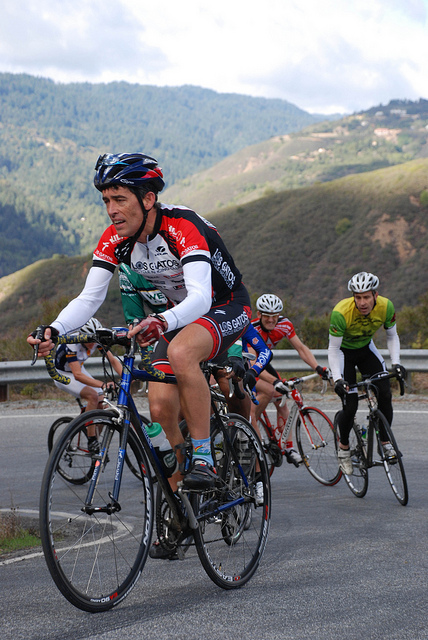

Low-Key Hillclimbs Aggregate Results:
Soda Springs
generated Fri Nov 4 10:34:15 PDT 2016
|
|  |
| 2012 week 6: Rich Hill leads a group around one of Soda Springs Road's scenic corners (Thomas Preisler) |
Results are listed here from the Low-Key archives, sorted by time for each climb. Some years start and/or finish time differ slightly, such as
with Kings Mt Road where after 1995 the start moved from Entrance Way to Greer.
Results are ranked by time first, score second.
Score is calculated using a simple percent-of-median-speed
formula, with time adjustments for division. These scores will generally differ from those calculated in the results for that particular year, since
the scoring scheme has evolved. Tandems are split between 1998, when they were counted as single participants, and other years, when the individual
riders have been counted separately
Results for Men
| rank | time | score | rider | cat | team | year | week | code |
|---|
| 1 | 28:15 | 134.041 | Adrien Costa | Junior | Slipstream-Craddock Jr. Development | 2012 | 6 | |
| 2 | 29:51 | 126.857 | Zeke Mostov | Junior | Slipstream-Craddock Jr. Development | 2012 | 6 | |
| 3 | 30:03 | 139.408 | Tracy Colwell | USCF 2 | Team Colwell | 1997 | 5 | |
| 4 | 30:04 | 128.875 | Christopher Phipps | 35+ | Western Wheelers | 2009 | 4 | |
| 5 | 30:21 | 124.767 | Tim Aiken | 17-18 | Bear Development Team | 2012 | 6 | |
| 6 | 30:26 | 124.425 | Tracy Colwell | 40+ | Team Colwell | 2012 | 6 | |
| 7 | 30:29 | 124.221 | Clark Foy | 45+ | Western Wheelers | 2012 | 6 | |
| 8 | 30:42 | 123.344 | Carl Nielson | 50+ | Sr's & Mr's of No Mercy | 2012 | 6 | |
| 9 | 31:23 | 120.659 | josh pizzica | 35+ | Gene-Solve/Etxea | 2012 | 6 | |
| 10 | 31:28 | 133.132 | Craig Schommer | None | LGBRC | 1997 | 5 | |
| 11 | 31:29 | 120.275 | Tim Clark | 45+ | Low-Key | 2012 | 6 | |
| 12 | 31:38 | 132.430 | Eric Albrecht | 35+ | Menlo Velo | 1997 | 5 | |
| 13 | 31:44 | 122.121 | Eric Balfus | | LGBRC | 2009 | 4 | |
| 14 | 31:51 | 126.433 | Eric Albrecht | 4 | Menlo Velo | 1998 | 3 | |
| 15 | 31:56 | 118.580 | David Collet | 40+ | | 2012 | 6 | |
| 16 | 32:06 | 120.707 | Daniel Connelly | 40+ | Low-Key | 2009 | 4 | |
| 17 | 32:09 | 117.781 | Rich Brown | 35+ | The Brown Zone | 2012 | 6 | |
| 18 | 32:12 | 120.370 | Ciaran Byrne | | | 2009 | 4 | |
| 19 | 32:13 | 117.538 | Robby Cuthbert | 20+ | Hausbert | 2012 | 6 | |
| 20 | 32:14 | 120.190 | Ammon Skidmore | 30+ | Team Roaring Mouse | 2009 | 4 | |
| 21 | 32:15 | 120.165 | Mark Edwards | 45+ | Bike Trip/Symantec | 2009 | 4 | |
| 22 | 32:17 | 120.053 | Clark Foy | 45+ | Metrigear | 2009 | 4 | |
| 23 | 32:18 | 117.234 | Daryl Spano | 45+ | San Jose Bike Club | 2012 | 6 | |
| 24 | 32:22 | 116.993 | Ciaran Byrne | 40+ | Sr's & Mr's of No Mercy | 2012 | 6 | |
| 24 | 32:22 | 116.993 | Alex Kramer | 35+ | Western Wheelers | 2012 | 6 | |
| 26 | 32:23 | 119.664 | Tim Clark | 40+ | Metrigear | 2009 | 4 | |
| 27 | 32:30 | 119.204 | Dominic Pezzoni | 20+ | | 2009 | 4 | |
| 28 | 32:31 | 116.453 | Mark Edwards | 50+ | Bike Trip/Symantec | 2012 | 6 | |
| 29 | 32:39 | 128.307 | Michael Matthews | 25+ | | 1997 | 5 | |
| 30 | 32:42 | 115.800 | morgan raines | 40+ | Bike Trip/Symantec | 2012 | 6 | |
| 31 | 32:44 | 118.397 | Geoff Drake | 50+ | Bike Trip/Symantec | 2009 | 4 | |
| 32 | 32:48 | 122.771 | Curt Ferguson | | TNT | 1998 | 3 | |
| 33 | 32:50 | 122.646 | Tim Clark | 3 | Team Newborn | 1998 | 3 | |
| 34 | 32:59 | 117.482 | Tom Gardin | 45+ | | 2009 | 4 | |
| 35 | 33:16 | 113.828 | Daniel Connelly | 3 | Low-Key | 2012 | 6 | |
| 36 | 33:19 | 113.657 | Jared Hudson | 30+ | Squadra SF | 2012 | 6 | |
| 37 | 33:20 | 116.272 | Laurent Pfertzel | 45+ | | 2009 | 4 | |
| 38 | 33:24 | 120.565 | John St. Denis | | | 1998 | 3 | |
| 39 | 33:26 | 113.260 | Rich Hill | 45+ | LGBRC | 2012 | 6 | |
| 40 | 33:27 | 115.872 | Andy Brisnehan | 50+ | Western Wheelers | 2009 | 4 | |
| 41 | 33:29 | 113.091 | Brian Schuster | 25+ | Dolce Vita Cycling | 2012 | 6 | |
| 42 | 33:32 | 120.086 | Clint Gaver | | | 1998 | 3 | |
| 43 | 33:36 | 115.303 | Doug Philippone | 35+ | Palantir | 2009 | 4 | |
| 43 | 33:36 | 115.303 | Bill Davis | 25+ | Google | 2009 | 4 | |
| 45 | 33:40 | 112.475 | Travis Retzer | 4 | Eden Bicycles | 2012 | 6 | |
| 46 | 33:41 | 124.371 | Tim Clark | USCF 3 | Team Tim | 1997 | 5 | |
| 47 | 33:42 | 114.967 | Nils Tikkanen | 3 | Bike Trip/Symantec | 2009 | 4 | |
| 48 | 33:43 | 112.308 | Dennis Van Hoof | 35+ | Type 1 Diabetes | 2012 | 6 | |
| 49 | 33:44 | 119.374 | Chris Oliver | | Team Mimosa | 1998 | 3 | |
| 50 | 33:44 | 114.887 | James Porter | 3 | Western Wheelers | 2009 | 4 | |
| 51 | 33:46 | 112.142 | Rob Easley | 45+ | Sr's & Mr's of No Mercy | 2012 | 6 | |
| 52 | 34:00 | 123.212 | Kevin Fox | 35+ | Alto Velo | 1997 | 5 | |
| 53 | 34:02 | 111.263 | Joseph Sullivan | 35+ | San Jose Bike Club | 2012 | 6 | |
| 54 | 34:05 | 111.100 | Geoff Drake | 50+ | Bike Trip/Symantec | 2012 | 6 | |
| 55 | 34:07 | 110.992 | David Gonzales | 35+ | | 2012 | 6 | |
| 56 | 34:10 | 113.408 | Thomas Novikoff | 2 | Alto Velo | 2009 | 4 | |
| 57 | 34:17 | 110.452 | James Porter | 3 | Western Wheelers | 2012 | 6 | |
| 58 | 34:22 | 110.184 | Nigel White | 50+ | Sherwood CC | 2012 | 6 | |
| 59 | 34:22 | 112.776 | Matt Wocasek | 3 | Bike Trip/Symantec | 2009 | 4 | |
| 60 | 34:25 | 110.024 | H Two Brown | 50- | The Brown Zone | 2012 | 6 | |
| 61 | 34:28 | 109.865 | Stefano Profumo | 30+ | Bike Trip/Symantec | 2012 | 6 | |
| 61 | 34:28 | 109.865 | Andy Crews | 40+ | Diablo | 2012 | 6 | |
| 63 | 34:33 | 116.552 | Troy Soares | 5 | TRH Racing | 1998 | 3 | |
| 64 | 34:39 | 116.216 | Jeff Emery | 5 | | 1998 | 3 | |
| 65 | 34:42 | 111.671 | Ron Brunner | Commuter | Low-Key | 2009 | 4 | |
| 66 | 34:47 | 115.770 | Robert Murillo | | | 1998 | 3 | |
| 67 | 34:48 | 115.715 | Jeremy Smith | 3 | San Jose Bike Club | 1998 | 3 | |
| 68 | 34:48 | 111.356 | John Walker | 45+ | Google | 2009 | 4 | |
| 69 | 34:49 | 115.660 | Andrew Verhalen | | | 1998 | 3 | |
| 69 | 34:49 | 115.660 | Scott Martin | 40+ | Bike Trip/Symantec | 1998 | 3 | |
| 71 | 34:49 | 108.760 | ben weir | 30+ | Western Wheelers | 2012 | 6 | |
| 72 | 34:51 | 120.207 | Dickie Brock | MTB | Armadillo Willys | 1997 | 5 | |
| 72 | 34:51 | 120.207 | Todd Studenicka | USCF 4 | San Jose Bike Club | 1997 | 5 | |
| 74 | 35:06 | 110.409 | Jeff Farnsworth | 50+ | San Jose Bike Club | 2009 | 4 | |
| 75 | 35:10 | 110.200 | Michael Simos | 35+ | LGBRC | 2009 | 4 | |
| 76 | 35:13 | 107.525 | Jamy Bacchus | 40+ | Berkeley Bike Club | 2012 | 6 | |
| 77 | 35:17 | 118.731 | Chris Preas | Public | TnT | 1997 | 5 | |
| 78 | 35:21 | 113.915 | David George | | | 1998 | 3 | |
| 79 | 35:25 | 106.918 | Tom Stanis | 35+ | Google | 2012 | 6 | |
| 80 | 35:29 | 109.227 | Tim Sawyer | 45+ | Bike Trip/Symantec | 2009 | 4 | |
| 81 | 35:30 | 109.171 | Michael Chasse | 45+ | Bike Dads | 2009 | 4 | |
| 82 | 35:32 | 113.327 | Richard Herms | 35+ | Team Adventure | 1998 | 3 | |
| 83 | 35:34 | 117.785 | Tom Gardin | None | | 1997 | 5 | |
| 84 | 35:35 | 113.168 | Bryan Buck | Mountain Bike | Buck Racing | 1998 | 3 | |
| 85 | 35:38 | 108.737 | Brian Edwards | 30+ | Rocky Mounts/Pearl Izumi | 2009 | 4 | |
| 86 | 35:41 | 106.119 | Roland Freund | 55+ | Davis Bike Club | 2012 | 6 | |
| 87 | 35:45 | 112.640 | Eric Balfus | | X-Men | 1998 | 3 | |
| 88 | 35:46 | 112.587 | Tom Gardin | | HLBC | 1998 | 3 | |
| 89 | 35:48 | 108.246 | David Quincy | | Sponge Bob | 2009 | 4 | |
| 90 | 35:49 | 105.724 | Mark King | 45+ | IC3 Hammer Nutrition | 2012 | 6 | |
| 91 | 35:52 | 108.029 | Carmelo Rios | 50+ | Plus 3 | 2009 | 4 | |
| 92 | 35:54 | 116.691 | James Coats | 25+ | | 1997 | 5 | |
| 93 | 35:57 | 107.799 | Michael Barnes | | | 2009 | 4 | |
| 94 | 35:59 | 107.669 | Adam Brinkman | 25+ | | 2009 | 4 | |
| 95 | 36:00 | 105.185 | Martin Hyland | 55+ | Western Wheelers | 2012 | 6 | |
| 96 | 36:04 | 116.152 | Jody Hoose | 35+ | | 1997 | 5 | |
| 97 | 36:04 | 107.441 | Jacob Berkman | | | 2009 | 4 | |
| 98 | 36:05 | 104.942 | Jason Thompson | Hors | The Brown Zone | 2012 | 6 | |
| 99 | 36:09 | 111.394 | Bill Bushnell | | TNT | 1998 | 3 | |
| 100 | 36:10 | 115.831 | Rob Schott | USCF 4 | Alto Velo | 1997 | 5 | |
| 101 | 36:10 | 107.144 | Peter Mehlitz | 45+ | | 2009 | 4 | |
| 102 | 36:11 | 104.652 | Benjamin Dorfan | 5 | Unattached | 2012 | 6 | |
| 103 | 36:14 | 104.508 | Klaus Fleischmann | 40* | | 2012 | 6 | |
| 104 | 36:19 | 115.352 | Paul DeBacker | Public | | 1997 | 5 | |
| 105 | 36:22 | 115.194 | Ron Lebard | 45+ | Alto Velo | 1997 | 5 | |
| 106 | 36:24 | 115.088 | Kevin Winterfield | USCF 2 | Low-Key | 1997 | 5 | |
| 107 | 36:30 | 114.773 | W. Willis Su | USCF 5 | TnT | 1997 | 5 | |
| 108 | 36:30 | 103.744 | Ken Sato | 45+ | Bike Trip/Symantec | 2012 | 6 | |
| 109 | 36:35 | 103.508 | Naoto Sato | 45+ | | 2012 | 6 | |
| 110 | 36:35 | 105.919 | Bruce Gardner | 35+ | Sr's & Mr's of No Mercy | 2009 | 4 | |
| 111 | 36:36 | 110.024 | Bill Peete | 45+ | Bike Trip/Symantec | 1998 | 3 | |
| 112 | 36:39 | 103.320 | Bill Dvorak | 55+ | | 2012 | 6 | |
| 113 | 36:40 | 103.273 | Alexander Komlik | 45+ | San Jose Bike Club | 2012 | 6 | |
| 114 | 36:42 | 109.724 | Jim Mollerus | | Alto Velo | 1998 | 3 | |
| 115 | 36:43 | 114.096 | Bill Peete | 45+ | Bike Trip/Symantec | 1997 | 5 | |
| 116 | 36:44 | 103.085 | chris mickelsen | 55+ | Western Wheelers | 2012 | 6 | |
| 117 | 36:44 | 105.472 | Carl Butler | 50+ | Sr's & Mr's of No Mercy | 2009 | 4 | |
| 118 | 36:54 | 113.529 | Eric Nitschke | 18-19 | Team Quattro Assi | 1997 | 5 | |
| 119 | 37:00 | 102.342 | Chris Kovacs | 35+ | Eden Bicycles | 2012 | 6 | |
| 120 | 37:01 | 104.703 | Dave Rossow | 35+ | Alto Velo | 2009 | 4 | |
| 121 | 37:03 | 108.688 | Ron LeBard | 50+ | Alto Velo | 1998 | 3 | |
| 122 | 37:03 | 102.204 | Justin Lucke | Plant Based | LGBRC | 2012 | 6 | |
| 123 | 37:05 | 104.486 | Joseph Sullivan | 35+ | | 2009 | 4 | |
| 124 | 37:09 | 101.929 | Paul Diac | 25+ | | 2012 | 6 | |
| 125 | 37:12 | 104.191 | Benoit Pelczar | 35+ | Bike Trip/Symantec | 2009 | 4 | |
| 126 | 37:14 | 112.512 | Brian Fravel | 25+ | Chapel Hill Spinners | 1997 | 5 | |
| 127 | 37:15 | 104.047 | Nathan Cauffman | 30+ | UID | 2009 | 4 | |
| 128 | 37:17 | 108.007 | Daryl Spano | 5 | San Jose Bike Club | 1998 | 3 | |
| 129 | 37:19 | 101.474 | Takanobu Seimiya | 40+ | Nikon Cycling Club | 2012 | 6 | |
| 130 | 37:22 | 107.767 | Ted Rees | 50+ | | 1998 | 3 | |
| 131 | 37:25 | 103.565 | Sean Broeder | 45+ | Silicon Valley Triathlon | 2009 | 4 | |
| 132 | 37:32 | 107.288 | Zach Walker | 3 | LGBRC | 1998 | 3 | |
| 133 | 37:33 | 111.564 | Jay Plater | USCF 5 | BFD | 1997 | 5 | |
| 134 | 37:33 | 103.216 | Bart Johnson | 40+ | SLACer | 2009 | 4 | |
| 135 | 37:36 | 100.709 | Brian Johnston | 50+ | JahWind | 2012 | 6 | |
| 136 | 37:39 | 106.956 | Sam Beal | 45+ | | 1998 | 3 | |
| 137 | 37:41 | 102.823 | Martin Hyland | 50+ | Western Wheelers | 2009 | 4 | |
| 138 | 37:44 | 100.353 | Miro Miklos | 30+ | | 2012 | 6 | |
| 139 | 37:49 | 106.484 | Bob Parker | | Republic of Anaerobia | 1998 | 3 | |
| 140 | 37:52 | 100.000 | J.D. Daniels | 35+ | Eden Bicycles | 2012 | 6 | |
| 141 | 37:54 | 99.912 | Matt Wocasek | 45+ | Bike Trip/Symantec | 2012 | 6 | |
| 142 | 37:55 | 99.868 | Bruce Pauly | 50+ | Sr's & Mr's of No Mercy | 2012 | 6 | |
| 143 | 38:00 | 105.970 | Dean Hoornaert | | | 1998 | 3 | |
| 144 | 38:02 | 101.895 | Christian Paquet | 50+ | Doogie | 2009 | 4 | |
| 145 | 38:07 | 99.344 | Anthony Jawad | 25+ | Google | 2012 | 6 | |
| 146 | 38:09 | 99.257 | Crist Clark | 40+ | Alto Velo | 2012 | 6 | |
| 147 | 38:13 | 105.370 | Daniel Law | | | 1998 | 3 | |
| 147 | 38:13 | 105.370 | Greg Dougald | 35+ | Alto Velo | 1998 | 3 | |
| 149 | 38:13 | 101.402 | Chuck Spiteri | 50+ | Pen Velo/Pomodoro | 2009 | 4 | |
| 150 | 38:14 | 101.353 | Mike Salameh | 55+ | | 2009 | 4 | |
| 151 | 38:16 | 109.474 | David Snyder | | Pedersen | 1997 | 5 | |
| 152 | 38:16 | 98.955 | Toshi Tajima | 45+ | Google | 2012 | 6 | |
| 153 | 38:20 | 109.284 | Karl W. Jesse | None | Keepers | 1997 | 5 | |
| 154 | 38:20 | 101.102 | John Richardson | 55+ | Over The Hill | 2009 | 4 | |
| 155 | 38:26 | 104.776 | Giorgio Cosentino | Public | TNT | 1998 | 3 | |
| 156 | 38:27 | 104.730 | Mark King | 5 | Fremont Freewheelers | 1998 | 3 | |
| 157 | 38:29 | 98.398 | Blue Brown | Meat Based | The Brown Zone | 2012 | 6 | |
| 158 | 38:30 | 100.647 | Martin Hampton | 45+ | Pen Velo/Pomodoro | 2009 | 4 | |
| 159 | 38:31 | 100.617 | Scott Martin | 50+ | Bike Trip/Symantec | 2009 | 4 | |
| 160 | 38:34 | 108.623 | Robert Murillo | 35+ | | 1997 | 5 | |
| 161 | 38:34 | 98.185 | Scott Martin | 55+ | Bike Trip/Symantec | 2012 | 6 | |
| 162 | 38:35 | 104.368 | Dean Larson | 35+ | Team Dino | 1998 | 3 | |
| 163 | 38:38 | 104.233 | Barry Johnson | | | 1998 | 3 | |
| 164 | 38:39 | 97.973 | Brendon Gibson | 30+ | | 2012 | 6 | |
| 165 | 38:44 | 100.067 | David Vrane | 45+ | SLACer | 2009 | 4 | |
| 166 | 38:44 | 100.045 | Gino Cetani | 35+ | Western Wheelers | 2009 | 4 | |
| 167 | 38:46 | 99.955 | Phil Dubach | 35+ | Western Wheelers | 2009 | 4 | |
| 168 | 38:50 | 99.770 | Shance Ordell | 35+ | Western Wheelers | 2009 | 4 | |
| 169 | 38:51 | 97.469 | Jim Perreira | 45+ | | 2012 | 6 | |
| 170 | 38:51 | 99.741 | Pete Dunten | 45+ | SLACer | 2009 | 4 | |
| 171 | 38:52 | 107.784 | Pete Heller | Wheel Suckers | Alto Velo | 1997 | 5 | |
| 172 | 38:52 | 99.706 | Andre Swart | Junior | Ryro | 2009 | 4 | |
| 173 | 38:54 | 107.692 | Giorgio Cosentino | Public | TnT | 1997 | 5 | |
| 174 | 38:55 | 99.565 | Eric Murray | 45+ | Alto Velo | 2009 | 4 | |
| 175 | 38:57 | 107.554 | Jimmy Aparisi | 25+ | CycleCraft | 1997 | 5 | |
| 176 | 38:57 | 103.386 | Hal Stanley | | | 1998 | 3 | |
| 177 | 39:01 | 107.370 | Al Williams | USCF 3 | Alto Velo | 1997 | 5 | |
| 178 | 39:02 | 97.011 | Steve Shores | 40+ | Berkeley Bike Club | 2012 | 6 | |
| 179 | 39:05 | 107.187 | Mac Imacseng | None | | 1997 | 5 | |
| 180 | 39:09 | 96.722 | Jay Kilby | 45+ | Elkhorn Creek Racing | 2012 | 6 | |
| 181 | 39:11 | 98.901 | Gary Shockey | 35+ | | 2009 | 4 | |
| 182 | 39:13 | 106.822 | Hal Stanley | Old Guys 48 | | 1997 | 5 | |
| 183 | 39:19 | 106.551 | Paul Mircik | Public | TnT | 1997 | 5 | |
| 184 | 39:25 | 106.280 | Steve Valadez | MTB | | 1997 | 5 | |
| 185 | 39:26 | 106.235 | Roy Johnson | USCF 3 | DC Velo | 1997 | 5 | |
| 186 | 39:30 | 106.056 | Mike Wilder | Public | | 1997 | 5 | |
| 187 | 39:31 | 106.011 | Frank McGorman | 35+ | Mimosa | 1997 | 5 | |
| 188 | 39:34 | 95.703 | Alan Weatherall | 50+ | San Jose Bike Club | 2012 | 6 | |
| 189 | 39:35 | 105.833 | Jack Ulstad | 35+ | New Vision | 1997 | 5 | |
| 190 | 39:42 | 97.606 | Bill Preucel | 45+ | Sr's & Mr's of No Mercy | 2009 | 4 | |
| 191 | 39:44 | 95.302 | Jim Langley | 55+ | Bike Trip/Symantec | 2012 | 6 | |
| 192 | 39:58 | 94.746 | Mike Davis | 45+ | LGBRC | 2012 | 6 | |
| 193 | 40:00 | 96.890 | Fred Egley | 45+ | Dos Egley's | 2009 | 4 | |
| 194 | 40:07 | 100.379 | James Haugner | | Alto Velo | 1998 | 3 | |
| 195 | 40:08 | 94.352 | Terrance Kloeckl | 50+ | | 2012 | 6 | |
| 196 | 40:14 | 96.332 | Neal Herman | 50+ | Spike the Wonder Dog | 2009 | 4 | |
| 197 | 40:14 | 96.312 | Patrick Keller | 40+ | | 2009 | 4 | |
| 198 | 40:15 | 96.296 | Dan Cervelli | | Palantir | 2009 | 4 | |
| 199 | 40:16 | 94.040 | Neal Herman | 55+ | Spike the Wonder Dog | 2012 | 6 | |
| 200 | 40:17 | 96.181 | Jeff Shute | 30+ | Google | 2009 | 4 | |
| 201 | 40:24 | 103.693 | Dean Larson | 25+ | | 1997 | 5 | |
| 202 | 40:30 | 103.437 | Neil Bence | 20+ | | 1997 | 5 | |
| 203 | 40:31 | 103.395 | Ed Miller | 55+ | | 1997 | 5 | |
| 204 | 40:35 | 103.225 | Sam Beal | 45+ | | 1997 | 5 | |
| 205 | 40:35 | 99.225 | Jack Utstad | NORBA Sport 40+ | New Vision | 1998 | 3 | |
| 206 | 40:38 | 93.191 | David Vrane | 45+ | Sr's & Mr's of No Mercy | 2012 | 6 | |
| 207 | 40:40 | 95.302 | Thomas Rabedeau | 50+ | SLACer | 2009 | 4 | |
| 208 | 40:44 | 98.860 | Colin Wright | | | 1998 | 3 | |
| 209 | 40:46 | 95.072 | Vince Valvano | | | 2009 | 4 | |
| 210 | 40:49 | 94.951 | John Carrino | 25+ | Palantir | 2009 | 4 | |
| 211 | 40:50 | 92.735 | Franz Kelsch | 65 Almost | Pan y Agua | 2012 | 6 | |
| 212 | 40:56 | 92.508 | Nick Bellomo | 30+ | Type 1 Diabetes | 2012 | 6 | |
| 213 | 41:00 | 102.176 | Paul Melville | 45+ | | 1997 | 5 | |
| 214 | 41:04 | 98.057 | Frank McGorman | | Team Mimosa | 1998 | 3 | |
| 215 | 41:05 | 94.308 | George Junour | | Santa Cruz | 2009 | 4 | |
| 216 | 41:07 | 101.886 | Greg Dougald | 35+ | | 1997 | 5 | |
| 217 | 41:07 | 94.266 | Craig Sander | 45+ | | 2009 | 4 | |
| 218 | 41:10 | 101.762 | Kyle Howden | 20+ | | 1997 | 5 | |
| 219 | 41:17 | 101.475 | Stephen P. Miller | 35+ | Tabasco | 1997 | 5 | |
| 220 | 41:18 | 93.818 | Stephen Fong | 40+ | San Jose Bike Club | 2009 | 4 | |
| 221 | 41:19 | 91.650 | Peter Ingram | 55+ | Ind. | 2012 | 6 | |
| 222 | 41:21 | 101.311 | Jim McCoy | 55+ | Alto Velo | 1997 | 5 | |
| 223 | 41:25 | 101.148 | Colin Wright | 35+ | | 1997 | 5 | |
| 224 | 41:28 | 101.026 | Mark Stout | 35+ | | 1997 | 5 | |
| 225 | 41:29 | 91.282 | Giles Douglas | 35+ | Google | 2012 | 6 | |
| 226 | 41:31 | 93.358 | Paul Melville | 55+ | Doogie | 2009 | 4 | |
| 227 | 41:33 | 96.916 | Bob Foulhaber | | | 1998 | 3 | |
| 228 | 41:34 | 93.238 | Jens Weber | 30+ | Doogie | 2009 | 4 | |
| 229 | 41:42 | 90.807 | Bob Scott | 40+ | | 2012 | 6 | |
| 230 | 41:43 | 90.771 | Jeff Shute | 30+ | Google | 2012 | 6 | |
| 231 | 41:45 | 90.699 | Frank Drobot | 60+ | Western Wheelers | 2012 | 6 | |
| 232 | 41:47 | 90.626 | pat callahan | 40+ | Quadzilla Racing | 2012 | 6 | |
| 233 | 41:50 | 100.141 | Bob McDermand | 55+ | San Jose Bike Club | 1997 | 5 | |
| 234 | 41:53 | 92.526 | Christopher Pistor | | | 2009 | 4 | |
| 235 | 41:56 | 92.397 | William Von Kaenel | 50+ | LGBRC | 2009 | 4 | |
| 236 | 41:57 | 95.992 | Paul Mircik | TB | TNT | 1998 | 3 | |
| 237 | 41:57 | 90.266 | Plamen Velikov | | SLACer | 2012 | 6 | |
| 238 | 42:00 | 90.159 | Matt Wittmann | 25+ | | 2012 | 6 | |
| 239 | 42:02 | 95.802 | Steven Smith | Klysdale | | 1998 | 3 | |
| 240 | 42:13 | 99.231 | Shawn Larsen | MTB | | 1997 | 5 | |
| 241 | 42:15 | 89.625 | Tim Irvine | 40+ | LGBRC | 2012 | 6 | |
| 242 | 42:21 | 91.514 | Nic Brummell | 45+ | Atlas | 2009 | 4 | |
| 243 | 42:28 | 89.168 | MichaelsJ. Andalora | 60+ | Bike Trip/Symantec | 2012 | 6 | |
| 244 | 42:32 | 98.492 | Tim Irvine | None | SJSU | 1997 | 5 | |
| 245 | 42:37 | 90.948 | Barry Burr | 50+ | Two legs to stand on | 2009 | 4 | |
| 246 | 42:38 | 94.454 | Bill Moore | 40+ | Team Pasture | 1998 | 3 | |
| 247 | 42:38 | 90.906 | Larry Berg | 50+ | | 2009 | 4 | |
| 248 | 42:46 | 88.542 | Nico Sallembien | 35+ | Silicon Valley Triathlon | 2012 | 6 | |
| 249 | 42:47 | 90.587 | Mark LaForge | 50+ | SSL Cycling Club | 2009 | 4 | |
| 250 | 43:01 | 97.386 | David Vasquez | 35+ | DFL | 1997 | 5 | |
| 251 | 43:02 | 97.348 | Mark Johnston | 25+ | | 1997 | 5 | |
| 252 | 43:04 | 87.926 | Larry Klein | 50+ | Grumpy Old Men (GOM) | 2012 | 6 | |
| 253 | 43:06 | 97.198 | Doug Balunis | Public | | 1997 | 5 | |
| 254 | 43:13 | 89.675 | Chris Toshok | 5 | RAMROD | 2009 | 4 | |
| 255 | 43:20 | 87.385 | Mihai R. | 30+ | Google | 2012 | 6 | |
| 256 | 43:26 | 87.183 | Jonas Kellner | 35+ | | 2012 | 6 | L |
| 257 | 43:30 | 89.074 | Scott Barry | 40+ | | 2009 | 4 | |
| 258 | 43:37 | 92.324 | David Hung | | Menlo Velo | 1998 | 3 | |
| 259 | 43:42 | 92.148 | Jim Lang | | | 1998 | 3 | |
| 260 | 43:47 | 88.505 | Garry Chinn | | Silicon Valley Triathlon | 2009 | 4 | |
| 261 | 43:54 | 86.257 | Kevin Colagiovanni | 25+ | Team DUD | 2012 | 6 | |
| 262 | 43:55 | 88.229 | Han Wen | 40+ | | 2009 | 4 | |
| 263 | 44:06 | 94.993 | Ted Rees | 45+ | Digital Papyrus | 1997 | 5 | |
| 264 | 44:07 | 94.958 | Chris Bailey | 25+ | | 1997 | 5 | |
| 265 | 44:18 | 87.492 | Keijiro Ikebe | Livestrong | Livestrong | 2009 | 4 | |
| 265 | 44:18 | 87.492 | Patrick Callahan | 40+ | Western Wheelers | 2009 | 4 | |
| 267 | 44:20 | 85.414 | Dave Fitch | 70+ | Pan y Agua | 2012 | 6 | |
| 268 | 44:22 | 85.349 | Wink Saville | 60+ | Google | 2012 | 6 | |
| 269 | 44:24 | 94.352 | Mark Anderson | USCF 4 | | 1997 | 5 | |
| 270 | 44:25 | 94.316 | Brian Mulroe | None | One | 1997 | 5 | |
| 271 | 44:33 | 87.001 | Thomas Preisler | 50+ | LGBRC | 2009 | 4 | |
| 272 | 44:38 | 93.858 | Kenny Cleveland | 25+ | Campus Bikes | 1997 | 5 | |
| 273 | 44:40 | 90.154 | Bill Grasberger | | | 1998 | 3 | |
| 274 | 44:48 | 86.513 | Ed Cesar | | Team Roaring Mouse | 2009 | 4 | |
| 275 | 45:00 | 84.148 | Pierre Doussiere | 50+ | My LowRacer & myself | 2012 | 6 | |
| 276 | 45:01 | 89.453 | Paolo Piacentini | | | 1998 | 3 | |
| 277 | 45:14 | 83.714 | Nic Brummell | 50+ | Atlas | 2012 | 6 | |
| 278 | 45:15 | 92.579 | Greg Fish | 25+ | Tabasco | 1997 | 5 | |
| 279 | 45:17 | 92.511 | Jim Patterson | 180lb+ | Western Wheelers | 1997 | 5 | |
| 280 | 45:19 | 83.560 | Bart Niechwiej | 35+ | Google | 2012 | 6 | |
| 281 | 45:21 | 92.375 | Bill Grasberger | 35+ | | 1997 | 5 | |
| 282 | 45:27 | 92.172 | Jonathan Martinez | Public | | 1997 | 5 | |
| 283 | 45:30 | 88.503 | Mike Buchanan | | SCCC | 1998 | 3 | |
| 284 | 45:32 | 92.003 | Chris Oliver | 25+ | Mimosa | 1997 | 5 | |
| 285 | 45:36 | 91.869 | Sebastian Maurer | H.C | Pere Et Fils | 1997 | 5 | |
| 286 | 45:36 | 83.041 | Stephen Fong | 45+ | CyclePath Racing | 2012 | 6 | |
| 287 | 45:39 | 91.768 | Tom Romano | None | | 1997 | 5 | |
| 288 | 45:43 | 82.829 | richard contreras | 55+ | Team Rhus | 2012 | 6 | |
| 289 | 45:49 | 82.648 | Chris Baker | 45+ | Bike Trip/Symantec | 2012 | 6 | |
| 290 | 45:51 | 82.588 | Tom Jakaby | 50+ | Buycell/Jakaby Engineering | 2012 | 6 | |
| 291 | 45:58 | 87.604 | Frank Smoot | | Turbo Snails | 1998 | 3 | |
| 292 | 46:02 | 84.177 | Jerrick McCullough | 40+ | | 2009 | 4 | |
| 293 | 46:16 | 90.545 | Thomas Maslen | Public | | 1997 | 5 | |
| 294 | 46:21 | 83.596 | Pascal Bruyere | 40+ | | 2009 | 4 | |
| 295 | 46:26 | 86.724 | Sebastian Maurer | NC | Pere Et Fils | 1998 | 3 | |
| 296 | 46:33 | 86.507 | Allen Price | | | 1998 | 3 | |
| 297 | 46:35 | 83.180 | James Dudley | | | 2009 | 4 | |
| 298 | 46:40 | 83.052 | Bernhard Hiller | 50+ | Jelly Belly | 2009 | 4 | |
| 299 | 46:51 | 80.825 | Eddie Santos | 25+ | | 2012 | 6 | |
| 300 | 46:55 | 89.291 | John Stark | Very Old | | 1997 | 5 | |
| 301 | 46:55 | 80.710 | Jay Cohan | 45+ | Spike the Wonder Dog | 2012 | 6 | |
| 302 | 47:01 | 85.648 | Bryn Dole | Former Cat 5 | Team Internet | 1998 | 3 | |
| 303 | 47:10 | 80.283 | Ed Miller | 70+ | SLACer | 2012 | 6 | |
| 303 | 47:10 | 80.283 | Norbert Kappel | 55+ | San Jose Bike Club | 2012 | 6 | |
| 305 | 47:24 | 88.380 | Joey Horowitz | MTB | Team Shrine | 1997 | 5 | |
| 306 | 47:39 | 81.316 | Mark Powers | 50+ | Pen Velo/Pomodoro | 2009 | 4 | |
| 307 | 47:40 | 87.886 | Bill Ekstrom | 45+ | | 1997 | 5 | |
| 308 | 47:48 | 81.064 | Richard Allen | 60+ | Sr's & Mr's of No Mercy | 2009 | 4 | |
| 309 | 47:49 | 84.215 | Tim Irvine | Low | SJSU | 1998 | 3 | |
| 310 | 47:50 | 84.186 | Albert Li | 5 | Republic of Anaerobia | 1998 | 3 | |
| 311 | 47:59 | 87.306 | Allen Price | 45+ | | 1997 | 5 | |
| 312 | 48:00 | 80.729 | Christopher Olson | 5 | Google | 2009 | 4 | |
| 313 | 48:01 | 83.864 | Stephen Fong | | | 1998 | 3 | |
| 314 | 48:10 | 86.973 | Bill Keating | MTB | | 1997 | 5 | |
| 315 | 48:17 | 83.401 | Christoph Schuba | | Team Internet | 1998 | 3 | |
| 316 | 48:17 | 78.426 | Han Wen | 40+ | Grumpy Old Men (GOM) | 2012 | 6 | |
| 317 | 48:18 | 83.372 | Bill Keaton | | | 1998 | 3 | |
| 318 | 48:40 | 86.080 | John Zents | 25+ | | 1997 | 5 | |
| 319 | 48:46 | 79.473 | Kley Cardona | 45+ | ACTC | 2009 | 4 | |
| 320 | 49:01 | 82.153 | Randy Nelson | 40+ | Team Pasture | 1998 | 3 | |
| 321 | 49:05 | 85.349 | Nicholas Leavy | 20+ | | 1997 | 5 | |
| 322 | 49:19 | 84.945 | Frank Smoot | | | 1997 | 5 | |
| 323 | 49:25 | 81.488 | Bill Ekstrom | | Dad Daughter Dynamic Duo | 1998 | 3 | |
| 324 | 49:42 | 77.978 | Tommy Abdal | 5 | | 2009 | 4 | |
| 325 | 49:59 | 77.521 | Bob Gumaer | 50+ | UID | 2009 | 4 | |
| 326 | 50:04 | 75.632 | John Bono | 40+ | SCCCC | 2012 | 6 | |
| 327 | 50:21 | 83.202 | Lee Moncton | None | Nvidia | 1997 | 5 | |
| 328 | 50:23 | 76.906 | Bob Corman | 50+ | Spike the Wonder Dog | 2009 | 4 | |
| 329 | 50:31 | 82.927 | Dick Robinson | 45+ | TnT | 1997 | 5 | |
| 330 | 50:44 | 79.373 | Wayne Westgate | | | 1998 | 3 | |
| 331 | 50:48 | 82.465 | Wayne Westgate | 45+ | | 1997 | 5 | |
| 332 | 51:00 | 75.976 | Mike Ahern | 40+ | LGBRC | 2009 | 4 | |
| 333 | 51:16 | 73.862 | Kris McQueen | 35+ | Diablo | 2012 | 6 | |
| 334 | 51:27 | 81.423 | Rodrigo Rubiano | None | | 1997 | 5 | |
| 335 | 52:04 | 74.420 | Steve Youtsey | 4/45+ | Dolce Vita Cycling | 2009 | 4 | |
| 336 | 52:14 | 80.202 | Joseph Maurer | H.C | Pere Et Fils | 1997 | 5 | |
| 337 | 52:25 | 76.824 | Joseph Maurer | HC | Pere Et Fils | 1998 | 3 | |
| 338 | 52:33 | 73.743 | John Conklin | 40+ | | 2009 | 4 | |
| 339 | 52:47 | 79.366 | Carlo Franciotti | 12-15 | | 1997 | 5 | |
| 340 | 53:20 | 72.664 | Chris Chang | 45+ | Old & slow | 2009 | 4 | |
| 341 | 53:33 | 78.230 | Greg Condon | 45+ | | 1997 | 5 | |
| 342 | 53:44 | 77.963 | Fred Butts | 55+ | TnT | 1997 | 5 | |
| 343 | 54:09 | 74.365 | Stephen Morris | Open | Team Adventure | 1998 | 3 | |
| 344 | 54:30 | 76.866 | Michael Royer | MTB | | 1997 | 5 | |
| 345 | 54:48 | 69.100 | Bob Corman | 55+ | | 2012 | 6 | |
| 346 | 55:12 | 72.951 | Leo Menestrina | 5 | Alto Velo | 1998 | 3 | |
| 347 | 55:14 | 72.907 | Blake Nelson | | | 1998 | 3 | |
| 348 | 55:37 | 72.404 | Fred Butts | 50+ | TNT | 1998 | 3 | |
| 349 | 55:43 | 75.188 | Greg Gretz | 25+ | | 1997 | 5 | |
| 350 | 56:28 | 71.314 | Juanes Ray | 5 | 1st Air Del Co. | 1998 | 3 | |
| 351 | 56:48 | 73.754 | Bill Bowers | 65+ | Toad CC | 1997 | 5 | |
| 352 | 57:25 | 72.962 | John Vogel | 45+ | TnT | 1997 | 5 | |
| 353 | 57:31 | 72.835 | Don Taylor | 45+ | | 1997 | 5 | |
| 354 | 59:31 | 70.387 | Dave Mason | 45+ | | 1997 | 5 | |
| 355 | 59:54 | 69.937 | James Collier | None | | 1997 | 5 | |
| 356 | 62:02 | 64.915 | Don Low | | Team Miguel | 1998 | 3 | |
| 357 | 62:09 | 67.405 | Tim Peoples | 25+ | | 1997 | 5 | |
| 358 | 62:22 | 67.171 | Stephen Morris | 45+ | | 1997 | 5 | |
| 359 | 73:07 | 57.295 | Kwan Low | USCF 5 | | 1997 | 5 | |
| 360 | 73:42 | 54.639 | Ron Tanikawa | | | 1998 | 3 | |
| 361 | 77:20 | 54.171 | Elliott Fox | 12-15 | | 1997 | 5 | |
| 362 | 87:00 | 46.286 | Rich Garno | | Team Round Boy | 1998 | 3 | |
| 363 | 88:20 | 45.587 | Harvey Koozer | Couch Potato | Turbo Snails | 1998 | 3 | |
| 364 | 93:30 | 44.804 | Conor Schott | 0-10 | Alto Velo | 1997 | 5 | |
L : late start
Results for Hybrid Electric
| rank | time | score | rider | cat | team | year | week | code |
|---|
| 1 | 19:19 | 113.905 | Bill Bushnell | It's Mostly The Bike | Low-Key | 2012 | 6 | |
Results for Women
| rank | time | score | rider | cat | team | year | week | code |
|---|
| 1 | 36:47 | 124.180 | Lisa Penzel | 45+ | The Brown Zone | 2012 | 6 | |
| 2 | 37:25 | 129.822 | Laura Stern | | | 1998 | 3 | |
| 3 | 38:40 | 125.625 | Cornelia Fletcher | | Menlo Velo | 1998 | 3 | |
| 4 | 38:55 | 117.373 | Kelly Crowley | | Team Kelly | 2012 | 6 | |
| 5 | 39:18 | 116.228 | LT Brown | | The Brown Zone | 2012 | 6 | |
| 6 | 39:47 | 117.507 | Janet Martinez/Gardner | 40+ | Sr's & Mr's of No Mercy | 2009 | 4 | |
| 7 | 40:47 | 119.105 | Janet Ekstrom | | Dad Daughter Dynamic Duo | 1998 | 3 | |
| 8 | 40:53 | 123.604 | Julie Colwell | USCF W4 | Team Colwell | 1997 | 5 | |
| 9 | 41:07 | 111.092 | Ginger Kroft | 40+ | Western Wheelers | 2012 | 6 | |
| 10 | 41:10 | 110.958 | Amy Cameron | 30+ | Sr's & Mr's of No Mercy | 2012 | 6 | |
| 11 | 42:07 | 108.455 | Melanie Wong | 25+ | Berkeley Bike Club | 2012 | 6 | |
| 12 | 42:15 | 114.971 | Colleen Farrell | 4 | | 1998 | 3 | |
| 13 | 42:53 | 108.997 | Mary Ellen Allen | 55+ | Sr's & Mr's of No Mercy | 2009 | 4 | |
| 14 | 42:59 | 108.743 | Lisa Gordon | 45+ | Palantir | 2009 | 4 | |
| 15 | 43:00 | 108.693 | Leah Toeniskoetter | | Turning Wheels for Kids | 2009 | 4 | |
| 16 | 43:07 | 105.939 | Laura Hipp | 4 | Western Wheelers | 2012 | 6 | |
| 17 | 43:14 | 116.885 | Cornezia Fletcher | Wpublic | BFD | 1997 | 5 | |
| 18 | 43:32 | 111.581 | Phyllis Olrich | 45+ | Alto Velo | 1998 | 3 | |
| 19 | 43:32 | 104.925 | Janet Martinez/Gardner | | Sr's & Mr's of No Mercy | 2012 | 6 | |
| 20 | 43:33 | 107.333 | Christy Cowley | 40+ | Sr's & Mr's of No Mercy | 2009 | 4 | |
| 21 | 43:35 | 115.946 | Caroline Stronck | USCF W4 | Alto Velo | 1997 | 5 | |
| 22 | 43:39 | 115.769 | Janet Ekstrom | Wpublic | | 1997 | 5 | |
| 23 | 43:46 | 106.810 | Lucia Mokres | | LGBRC | 2009 | 4 | |
| 24 | 43:49 | 106.696 | Lyresa Pleskovitch | 40+ | Western Wheelers | 2009 | 4 | |
| 25 | 44:02 | 103.734 | Roxy Brown | 40+ | The Brown Zone | 2012 | 6 | |
| 26 | 44:48 | 108.427 | Meg Geherd | | | 1998 | 3 | |
| 27 | 45:47 | 102.102 | Laura Schuster | 40+ | Silicon Valley Triathlon | 2009 | 4 | |
| 28 | 45:50 | 101.976 | Cathy Foy | Beginner | Metrigear | 2009 | 4 | |
| 29 | 46:02 | 109.776 | Andrea Ivan | 35+ | | 1997 | 5 | |
| 30 | 46:21 | 98.549 | Lisa Emmerich | 50+ | Sr's & Mr's of No Mercy | 2012 | 6 | |
| 31 | 46:33 | 100.428 | Laura Hipp | | Western Wheelers | 2009 | 4 | |
| 32 | 47:58 | 105.351 | Phyllis Olrich | 45+ | Alto Velo | 1997 | 5 | |
| 33 | 48:12 | 96.983 | Laura Egley | 45+ | Dos Egley's | 2009 | 4 | |
| 34 | 48:20 | 100.500 | Nancy Beer | 25+ | Team Dino | 1998 | 3 | |
| 35 | 48:20 | 94.505 | Sandra King | 40+ | Team Fremont FFBC p/b Chipotle | 2012 | 6 | |
| 36 | 49:03 | 95.290 | Lori Fabris | 50+ | Sr's & Mr's of No Mercy | 2009 | 4 | |
| 37 | 49:10 | 102.780 | Sherri Mulroe | None | One | 1997 | 5 | |
| 38 | 49:50 | 101.405 | Lynne Truong | 35+ | | 1997 | 5 | |
| 39 | 49:53 | 91.569 | Hannah Hausman | 20+ | Hausbert | 2012 | 6 | |
| 40 | 50:25 | 92.735 | Laura Jump | 4 | Spike the Wonder Dog | 2009 | 4 | |
| 41 | 50:25 | 92.723 | Liz Dillon | Beginner | Metrigear | 2009 | 4 | |
| 42 | 50:32 | 100.000 | Linda Palmer | Public | ROMP | 1997 | 5 | |
| 43 | 51:38 | 90.530 | Kelly Kasik | | | 2009 | 4 | |
| 44 | 52:07 | 93.205 | Judith Butts | | TNT | 1998 | 3 | |
| 45 | 52:39 | 95.980 | Kim Natzel | Wpublic | | 1997 | 5 | |
| 46 | 53:14 | 94.928 | Lisa Curran | USCF W4 | Alto Velo | 1997 | 5 | |
| 47 | 53:15 | 94.898 | Emerald Canery | 55+ | | 1997 | 5 | |
| 48 | 53:22 | 94.691 | Joy Shaffer | 35+ | LGBRC | 1997 | 5 | |
| 49 | 53:46 | 90.344 | Yvonne Galaxidas | | | 1998 | 3 | |
| 50 | 54:42 | 92.383 | Nancy Beer | 25+ | | 1997 | 5 | |
| 51 | 54:45 | 83.429 | Magdalena Novotna | 40+ | El Camino Tri Club | 2012 | 6 | |
| 52 | 54:56 | 85.098 | Lisa Emmerich | 45+ | Team Rwanda | 2009 | 4 | |
| 53 | 54:58 | 88.372 | Sheryl Weinman | | | 1998 | 3 | |
| 54 | 55:54 | 90.400 | Roxanne Robinson | Women Handicapp | TnT | 1997 | 5 | |
| 55 | 56:55 | 88.785 | Judith Butts | 45+ | TnT | 1997 | 5 | |
| 56 | 57:01 | 85.195 | Mary Lachepelli | | | 1998 | 3 | |
| 57 | 58:45 | 77.749 | Alison Chaiken | 50+ | Sr's & Mr's of No Mercy | 2012 | 6 | |
| 58 | 59:03 | 79.173 | Ingrid McCarty | 50+ | Western Wheelers | 2009 | 4 | |
| 59 | 60:15 | 75.813 | Christine Holmes | 45+ | Low-Key | 2012 | 6 | |
| 60 | 62:15 | 73.378 | andrea ivan | | Silicon Valley Triathlon | 2012 | 6 | |
| 61 | 62:42 | 74.560 | Pat Parseghian | 50+ | Google | 2009 | 4 | |
| 62 | 63:50 | 79.164 | Angela Lam | 25+ | | 1997 | 5 | |
| 63 | 65:38 | 74.010 | Laura Spano | | | 1998 | 3 | |
| 64 | 66:32 | 70.265 | Christine Holmes | 40+ | Low-Key | 2009 | 4 | |
| 65 | 69:04 | 67.683 | Christina Vaughn | 50+ | Google | 2009 | 4 | |
Results for Mixed
| rank | time | score | rider | cat | team | year | week | code |
|---|
| 1 | 43:09 | 102.048 | John Serafin/Lisa Antonino | Mixed Tandem | Bikeaholics | 1998 | 3 | |
| 2 | 44:12 | 99.624 | Mike Jensen/Liz Borra | Mixed Tandem | Bikeaholics | 1998 | 3 | |
| 3 | 46:08 | 95.449 | Tom Lawrence/Sarah Beaver | Mixed Tandem | Bikeaholics | 1998 | 3 | |
| 4 | 50:35 | 87.052 | Dick and Roxanne Robinson | Mixed Tandem | TNT | 1998 | 3 | |
Results for Tricycle
| rank | time | score | rider | cat | team | year | week | code |
|---|
| 1 | 56:08 | 71.738 | Joe Lansing | Trike | TNT | 1998 | 3 | |
Results for Tandem
| rank | time | score | rider | cat | team | year | week | code |
|---|
| 1 | 45:07 | 92.853 | Liz Borra | Mixed Tandem | LGBRC | 1997 | 5 | |
| 1 | 45:07 | 92.853 | Mike Jensen | Mixed Tandem | LGBRC | 1997 | 5 | |
| 3 | 46:24 | 81.609 | Winnie Lam Brehmer | Stoker | SLACer | 2012 | 6 | |
| 3 | 46:24 | 81.609 | Dan Brehmer | 45+ | SLACer | 2012 | 6 | |
Results for Male Runner
| rank | time | score | rider | cat | team | year | week | code |
|---|
| 1 | 38:59 | 97.136 | Gary Gellin | 40+ | Sr's & Mr's of No Mercy | 2012 | 6 | |